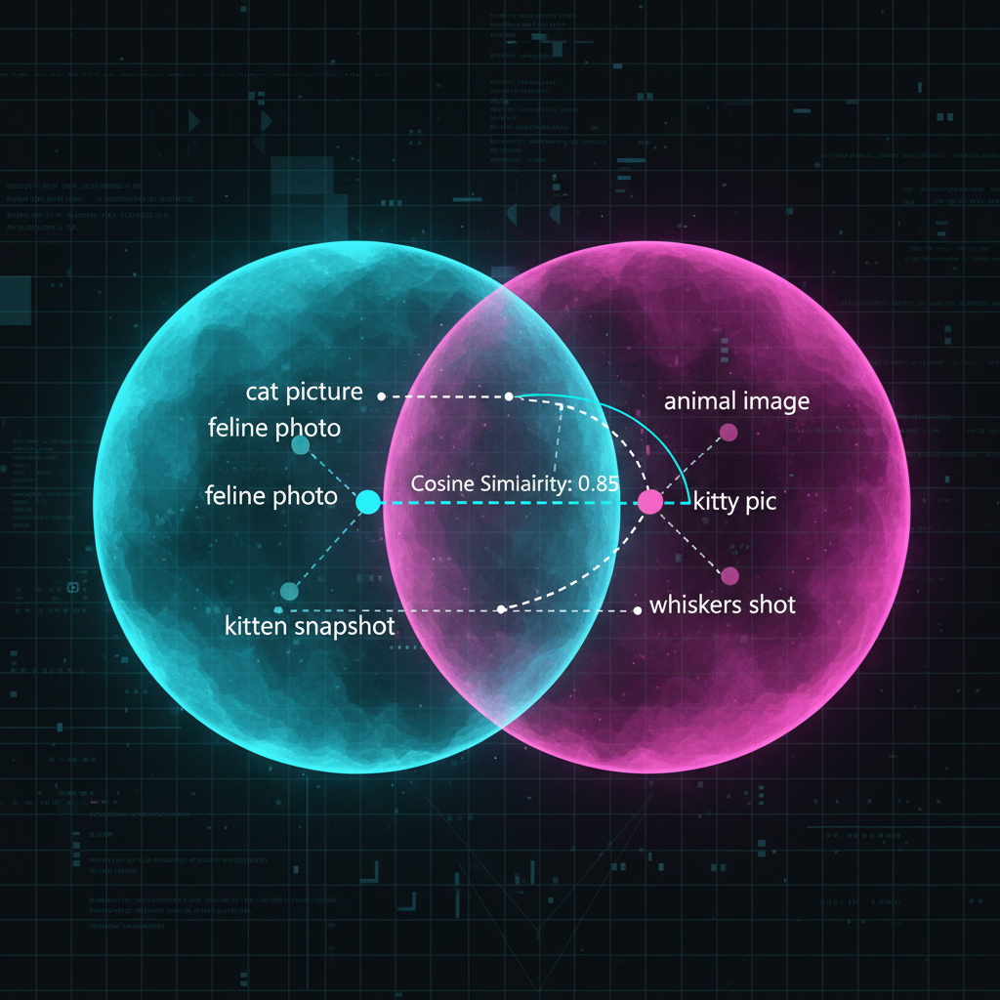
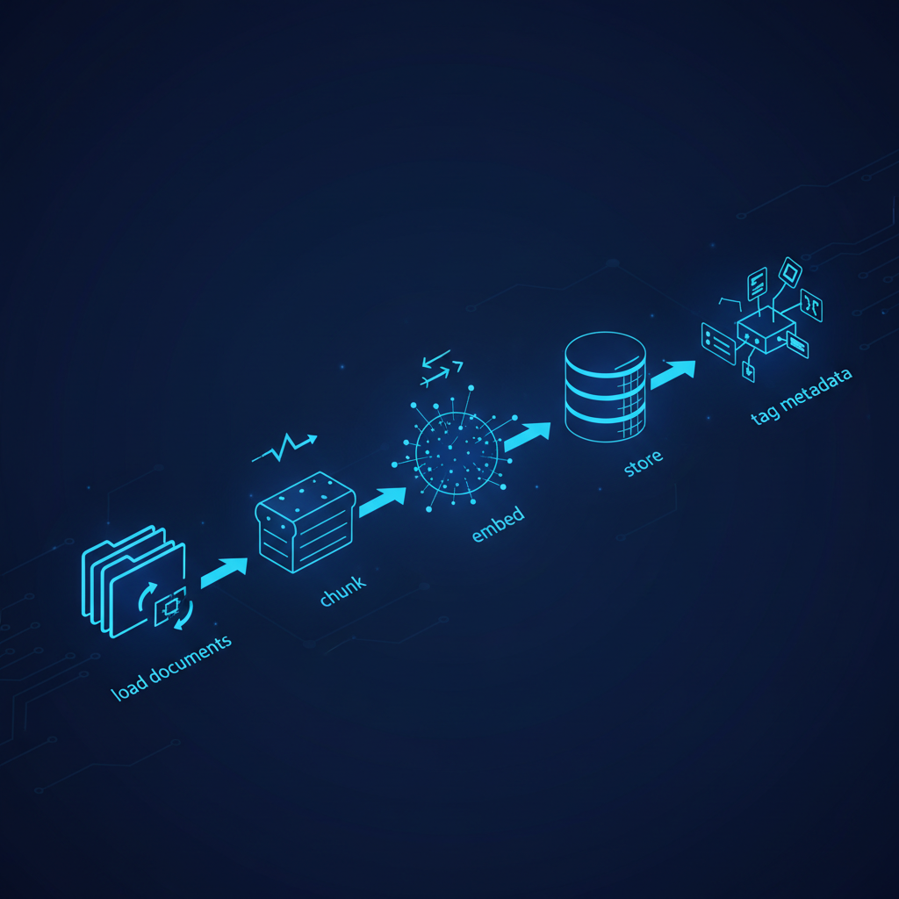
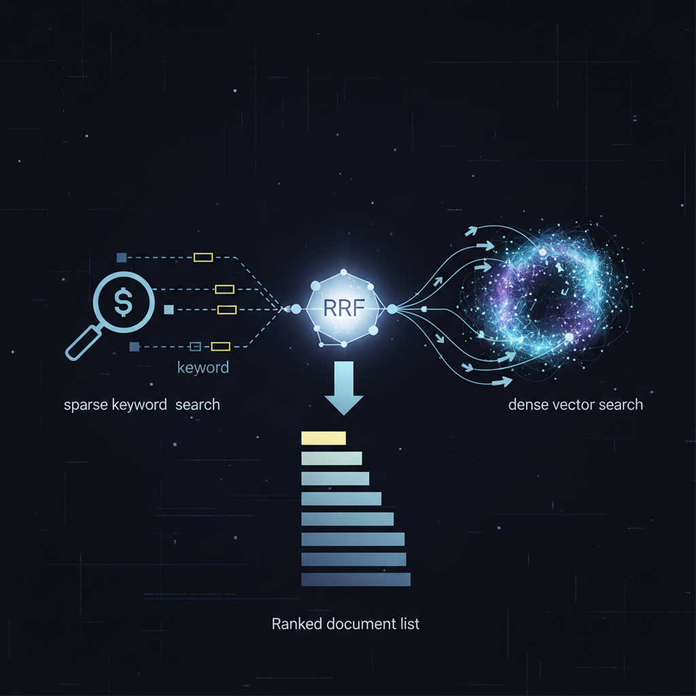

Todo LLM que você já usou mentiu pra você — com confiança, fluência e frequência. Pergunte a qualquer modelo sobre algo que aconteceu semana passada. Ele não sabe. Não pode saber. O conhecimento dele foi congelado meses atrás. Se tentar responder, alucina.
Isso não é bug. É limitação arquitetural fundamental. LLMs guardam conhecimento em parameters — bilhões de pesos numéricos aprendidos durante o treino. Quando o treino acaba, o conhecimento fica trancado. O modelo não sabe o que não sabe, então preenche as lacunas com fabricação confiante. Estudos mostram que taxas de hallucination podem ser tão baixas quanto 1% pra summarização simples — mas passam de 58% em tarefas complexas (survey de hallucination da ACM).
É exatamente isso que Retrieval-Augmented Generation (RAG) resolve. RAG não embute conhecimento no modelo — em vez disso, puxa contexto relevante quando você faz a pergunta. O modelo continua inteligente, seus dados ficam atualizados, e cada resposta é rastreável até a fonte.
Este post é adaptação enriquecida em PT-BR do deep dive de Neo Kim e Eric Roby no The System Design Newsletter, com adições próprias sobre frameworks, vector DBs e armadilhas que vejo em produção.
O problema do conhecimento — por que LLMs sozinhos não bastam
Conhecimento congelado no tempo
Todo LLM tem uma data de corte. Tudo que ele sabe foi raspado, processado e comprimido em parameters durante o treino. Depois dessa data, o modelo é cego — não sabe do lançamento do seu produto, do incidente de segurança de ontem, da mudança da política de RH desta manhã.
Em negócios, precisão importa. Customer support, análise jurídica, busca interna, compliance — modelo que não acessa informação atual é liability, não asset.
"Context windows enormes resolvem" — não, não resolvem
A abordagem força-bruta é tentadora: joga tudo no prompt. Context windows cresceram muito — alguns modelos já lidam com mais de um milhão de tokens. Mas tem três problemas fatais:
- É caro. Você paga por token. Mandar a base de conhecimento inteira em toda query queima o budget rapidamente.
- Tem limite duro. 1M de tokens não cobre os documentos de uma enterprise grande, muito menos os databases.
- Modelos pioram com mais contexto — e essa é a que a maioria ignora.
Pesquisa de Stanford e UC Berkeley mostra que performance de LLM segue curva em U. Modelos vão bem quando informação-chave está no início ou no fim, mas a acurácia despenca quando fatos importantes estão enterrados no meio. Nos experimentos de multi-document QA de Liu et al. ("Lost in the Middle"), acurácia caiu pra ~25% quando a informação-chave foi colocada no meio de 20 documentos. Ou seja: mais contexto não garante que o modelo vai usar.
"Então fine-tune" — também não
Fine-tuning ajusta os pesos do modelo pra incorporar novo conhecimento. Em teoria, dá pra ensinar o modelo sobre o seu domínio. Na prática, gera mais problemas que resolve:
- Exige GPU, expertise em ML, dados de treino cuidadosamente preparados.
- Demora dias ou semanas pra rodar.
- O resultado é um snapshot. Quando seu dado mudar, o modelo vira lixo.
- Custo recorrente: precisa retreinar a cada atualização significativa.
O que se precisa: fornecer ao LLM a informação certa no momento certo pra cada query, sem mudar o modelo. Isso é RAG.
O que RAG realmente é — a analogia da prova com consulta
RAG é um padrão arquitetural, não produto. A melhor analogia: prova com consulta vs. prova sem consulta.
Estudante em prova sem consulta depende do que decorou — esse é o LLM padrão. É inteligente, sabe raciocinar, mas está limitado ao que está nos parameters. Estudante em prova com consulta tem a mesma capacidade de raciocínio, mas pode checar páginas relevantes antes de responder. Esse é RAG.
A definição formal vem do paper de 2020 de Patrick Lewis e equipe no Facebook AI Research e University College London. Modelos RAG combinam parametric memory (o modelo pretreinado) com non-parametric memory (um índice externo de conhecimento) acessado por um neural retriever.
Você atualiza o conhecimento do modelo apenas trocando o índice de retrieval. Sem retraining. Loop de 3 passos:
- Query chega: usuário faz pergunta.
- Retrieve: sistema busca na base externa os melhores chunks de informação.
- Pergunta + contexto → LLM: o modelo gera resposta baseada nos documentos recuperados.
Você não está mudando o modelo. Está mudando o que ele vê. Essa distinção é o que torna RAG tão poderoso e prático.
Como RAG funciona por baixo do capô
Um sistema RAG tem duas partes principais:
- Pipeline de ingestão offline: prepara seus dados.
- Pipeline de retrieval online: responde às queries.
Embeddings — o mecanismo central

Antes de qualquer coisa, você precisa entender embeddings. É o conceito que habilita semantic search.
Text embeddings transformam texto em vetores densos de números (arrays de floats, tipicamente 1.536 ou 3.072 dimensões) que capturam o significado. Palavras e sentenças com intenção similar ficam próximas no espaço vetorial — mesmo com palavras diferentes.
Considere: "Como eu redefino minha senha?" e "Não consigo entrar na minha conta" usam palavras completamente diferentes. Quando convertidas em embeddings, produzem vetores quase idênticos. A distância entre eles é minúscula porque os significados são similares. Medido via cosine similarity, dot product ou distância Euclidiana.
O insight chave: o sistema acha conteúdo relevante mesmo quando a pergunta do usuário não usa as palavras exatas do documento. Busca por significado, não por keyword. Provedores populares de embeddings em 2026:
- OpenAI text-embedding-3-large — 3.072 dim, $0.13/1M tokens.
- Voyage voyage-3 — referência em qualidade.
- Cohere embed-multilingual-v3 — forte em PT-BR.
- Open-source: BGE-large, Nomic Embed, E5-multilingual.
Pipeline de ingestão (offline)

Quando rodar? Quando documento novo entra, quando documento existente é editado, quando database muda, ou em schedule (nightly, weekly). Times mais avançados disparam re-ingestion automaticamente quando a qualidade do retrieval cai.
Cinco passos:
- Load: carregar documentos de qualquer fonte (PDFs, databases, APIs, wikis, Slack, Confluence). LangChain e LlamaIndex oferecem conectores prontos pra dezenas de fontes.
- Chunking: dividir documentos em pedaços semanticamente coerentes. Este é o passo de maior alavanca. Estratégias: tamanho fixo (simples mas quebra parágrafos), sentence-based (NLTK/spaCy), recursive (LangChain default), semantic (custosa mas melhor qualidade), late chunking (técnica de 2024 que embedda o doc todo antes de cortar).
- Embedding: converter cada chunk em vetor com o modelo escolhido.
- Storage: armazenar os vetores em vector DB otimizado pra similarity search. Top picks: Pinecone, Qdrant, Weaviate, Milvus, pgvector (sobre Postgres).
- Metadata tagging: tagear cada chunk com fonte, timestamp, categoria, ACL. Essa metadata vira crítica depois pra filtering, attribution e security.
Pipeline de retrieval (online)

Quando o usuário pergunta, o pipeline de retrieval dispara:
- Query embedding: pergunta vira vetor, usando o mesmo modelo de embedding da ingestão. Crítico: query e documentos têm que viver no mesmo vector space.
- Similarity search: encontra os top-K chunks mais similares comparando o vetor da query com cada vetor no DB.
- Retrieval strategy: aqui é onde decisões reais de engenharia acontecem. Três abordagens primárias:
- Sparse retrieval (BM25): método estatístico que casa keywords exatas via TF-IDF.
- Dense retrieval (embeddings): busca semântica via vetores. Acha conteúdo conceitualmente relevante mesmo com palavras diferentes.
- Hybrid search: usa os dois e funde resultados com Reciprocal Rank Fusion (RRF). Documentos que ranqueiam alto nos dois sistemas ganham boost.
- Re-ranking: depois de recuperar, um modelo cross-encoder (ex: Cohere Rerank, BGE Reranker) re-pontua os top-K. Cross-encoders processam query + documento como input único, capturando relevância fina que bi-encoders perdem.
Generation phase
Com os chunks mais relevantes em mão, o sistema monta o prompt final:
- System prompt: instruções de como o LLM deve se comportar ("Você é assistente de suporte. Use apenas a documentação fornecida...").
- Retrieved context chunks: os pedaços relevantes da base de conhecimento.
- Query original do usuário: exatamente como foi digitada.
O modelo gera resposta grounded nos documentos recuperados. Os fatos-chave estão no prompt — o modelo usa-os pra raciocinar em vez de depender da memória de treino.
Citation e attribution: bom RAG sempre mostra de qual documento veio cada afirmação ("Baseado na Seção 3.2 do Manual do Funcionário..."). Essa é uma das maiores vantagens de RAG sobre fine-tuning: transparência.
RAG vs. alternativas — quando usar (e quando não)
RAG vs. Fine-tuning
A comparação mais comum. Nuance importante: não são competidores, são complementares.
- Fine-tuning: melhor pra ajustar comportamento, estilo, formato de output. Ex: ensinar o modelo a produzir JSON estruturado num esquema específico, ou adotar tom da empresa.
- RAG: melhor pra fornecer conhecimento dinâmico. Documentação que muda, FAQ que atualiza, base de produto que evolui.
Os melhores sistemas em produção fazem os dois: fine-tune pra estilo + RAG pra conhecimento.
RAG vs. Long Context
Por que não jogar tudo na context window enorme? Custo e precisão. RAG retrieva só os 5-20 chunks mais relevantes. Long context enfia tudo e torce pro modelo achar a agulha. RAG é mais barato por query, mais preciso no que encontra, e pode buscar em milhões de documentos sem limite de tokens.
Funcionam bem juntos: primeiro RAG pra trazer os 20 chunks certos, depois long context pra processar todos de uma vez. A pesquisa "lost in the middle" mostra que chunks pequenos e relevantes funcionam melhor que context windows gigantes.
Traditional RAG vs. Agentic RAG — o salto de 2024-2026
Traditional RAG segue o loop linear: query → retrieve → generate → done. Agentic RAG adiciona uma camada de raciocínio que decide:
- "A query precisa de retrieval ou eu sei responder direto?"
- "O resultado do retrieval foi bom? Preciso refazer com query diferente?"
- "Preciso quebrar essa query em sub-queries (multi-hop)?"
- "Preciso combinar múltiplas fontes (vector DB + SQL + API)?"
Frameworks pra agentic RAG: LlamaIndex Agents, LangGraph, Haystack. Self-RAG e CRAG (Corrective RAG) são as duas variantes mais influentes.
Erros comuns que vi em produção
- Chunk size errado. Chunks grandes demais (>1.000 tokens) diluem o sinal. Pequenos demais (<100) perdem contexto. Comece com 256-512 tokens com overlap de 50-100.
- Não fazer rerank. Top-5 puro de vector search é mediano. Rerank com cross-encoder dobra precisão sem custo proibitivo.
- Ignorar metadata filtering. Buscar "política de férias" sem filtrar por
company_idretorna lixo cross-tenant. - Não monitorar drift. Quando seus docs mudam, índice envelhece. Reembedding agendado ou triggered por evento é obrigatório.
- Pular eval. "Pareceu bom no demo" não vale. Use Ragas, TruLens ou golden test set custom pra medir faithfulness, answer relevancy, context precision.
Stack recomendada pra começar
- Framework: LangChain ou LlamaIndex pra prototipar; LangGraph quando precisar de agentic.
- Embeddings: OpenAI text-embedding-3-large pra prod; BGE/E5 pra self-hosted.
- Vector DB: pgvector se já tem Postgres (mais simples); Qdrant ou Weaviate pra escala; Pinecone se quiser SaaS gerenciado.
- Reranker: Cohere Rerank (API barata) ou BGE Reranker (self-hosted).
- Eval: Ragas (open-source).
- Observability: LangSmith, Arize Phoenix, ou Langfuse.
Conclusão
RAG não é trend — é a arquitetura que torna LLMs úteis em domínios reais. Sem ele, você está restrito ao conhecimento congelado do treino e às alucinações que vêm junto. Com ele, seus dados ficam no controle, atualizações são instantâneas (basta re-indexar), respostas são rastreáveis, e custo escala com query — não com retraining.
O esqueleto que cobrimos aqui é o ponto de partida. Em produção, você empilha agentic loops, multi-modal retrieval (texto + imagem + tabela), graph RAG, e estratégias de chunking mais sofisticadas. Mas se você não acerta o básico — chunking, embedding consistente entre query e docs, hybrid retrieval, rerank, eval contínuo — nenhuma camada extra salva.
Fonte original: "RAG - A Deep Dive" por Neo Kim e Eric Roby, publicado em The System Design Newsletter em 23 de março de 2026. Este post é adaptação enriquecida em PT-BR com adições de frameworks, ferramentas e armadilhas comuns observadas em produção. Pra ir mais fundo, recomendo também o canal de Eric Roby (@codingwithroby) sobre backend e o curso "RAG From Scratch" do LangChain no YouTube.